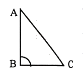
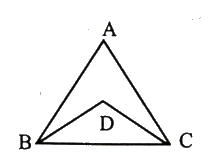
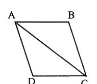

প্রাথমিক ও গণশিক্ষা মন্ত্রণালয় — সহকারী উপজেলা/থানা শিক্ষা অফিসার (ATEO) (২০১৩)
(Ministry of Primary and Mass Education - Assistant Thana/Upazila Education Officer ২০১৩)
সমুদ্র বিজয়: মায়ানমারের সাথে ITLOS রায়: ১৪ মার্চ ২০১২; ভারতের সাথে PCA রায়: ৭ জুলাই ২০১৪ (মোট অর্জিত জলসীমা ১,১৮,৮১৩ বর্গকিমি)।
বীর উত্তম ও সেক্টর: মুক্তিযুদ্ধের সেক্টর ১১টি; বীর উত্তম খেতাবপ্রাপ্ত ৬৮ জন (মোট খেতাবপ্রাপ্ত ৬৭৬ জন)।
গ্র্যান্ড খাল ও ওয়েস্টমিনস্টার: বিশ্বের দীর্ঘতম কৃত্রিম খাল চীনের 'গ্র্যান্ড ক্যানেল' (১,৭৭৬ কিমি)। সংসদীয় ব্যবস্থার আঁতুড়ঘর লন্ডনের 'ওয়েস্টমিনস্টার'।
আলো ও শব্দের দ্রুতি: শূন্যে আলোর বেগ \(3 \times 10^8\) m/s; বাতাসে শব্দের বেগ \(332\) m/s (তাই বিদ্যুৎ চমকালে আলো আগে পৌঁছায়)।
Part 2
বিগত বছরের লিখিত প্রশ্নব্যাংক ও ইন্টারেক্টিভ কুইজ ইঞ্জিন
⏳ সময় বাকি: ১৮০:০০
মূল্যায়ন অগ্রগতি: ০ / ৪৪
প্রশ্ন 1বাংলাপ্রবন্ধ রচনাপূর্ণমান: 25
যেকোনো একটি বিষয়ে রচনা লিখুন:
(a) বাংলাদেশের সমুদ্র বিজয়
(b) অব্যবহৃত প্রাকৃতিক সম্পদ
(c) ক্রমবর্ধমান নাগরিক সমস্যা
(d) সাম্প্রদায়িক সম্প্রীতি
স্ব-মূল্যায়ন:
বাংলাদেশের সমুদ্র বিজয়
ভূমিকা: বাংলাদেশের সমুদ্র বিজয় জাতীয় ইতিহাসে একটি যুগান্তকারী ও ঐতিহাসিক মাইলফলক। ১৯৭১ সালে স্বাধীনতা অর্জনের পর ভৌগোলিক ভূখণ্ড অর্জিত হলেও বঙ্গোপসাগরের বিশাল জলসীমায় বাংলাদেশের ন্যায্য অধিকার সুদীর্ঘ চার দশক ধরে অমীমাংসিত ছিল। প্রতিবেশী দুই দেশ ভারত ও মায়ানমারের সঙ্গে সমুদ্রসীমা বিরোধের কারণে বাংলাদেশ সমুদ্রের বিপুল জৈব ও খনিজ সম্পদ আহরণ থেকে বঞ্চিত ছিল। অবশেষে আন্তর্জাতিক আদালতের মাধ্যমে শক্তি প্রয়োগ না করে শান্তিপূর্ণ আইনি লড়াইয়ে বিজয় অর্জনের মাধ্যমে বাংলাদেশ বিশ্বে এক অনন্য কূটনৈতিক দৃষ্টান্ত স্থাপন করেছে।
সমুদ্রসীমা বিরোধের পটভূমি: বঙ্গোপসাগরের ভৌগোলিক অবস্থান বাংলাদেশের অস্তিত্ব ও সমৃদ্ধির সঙ্গে ওতপ্রোতভাবে জড়িত। সমদূরত্ব (Equidistance) ও ন্যায্যতা (Equity) নীতির পার্থক্যের কারণে প্রতিবেশীদের সাথে সমুদ্রসীমা নির্ধারণে জটিলতা দেখা দেয়। বাংলাদেশ ন্যায্যতার ভিত্তিতে সমুদ্রসীমা দাবি করে আসছিল, কিন্তু দ্বিপাক্ষিক আলোচনায় দীর্ঘকাল কোনো স্থায়ী সমাধান আসেনি।
মিয়ানমারের সঙ্গে সমুদ্রসীমা নিষ্পত্তি: বাংলাদেশ বিষয়টি জার্মানির হামবুর্গে অবস্থিত ইন্টারন্যাশনাল ট্রাইব্যুনাল ফর দ্য ল অব দ্য সি (ITLOS)-এ উত্থাপন করে। ২০১২ সালের ১৪ মার্চ ITLOS ঐতিহাসিক রায় ঘোষণা করে। রায়ে সেন্টমার্টিন দ্বীপকে উপকূলীয় ভিত্তি হিসেবে স্বীকৃতি দিয়ে ১২ নটিক্যাল মাইল আঞ্চলিক সমুদ্র, ২০০ নটিক্যাল মাইল অর্থনৈতিক অঞ্চল এবং মহীসোপানে বাংলাদেশের পূর্ণ সার্বভৌম অধিকার নিশ্চিত করা হয়।
ভারতের সঙ্গে সমুদ্রসীমা নিষ্পত্তি: মিয়ানমারের পর ভারতের সাথে বিরোধ নিষ্পত্তির জন্য নেদারল্যান্ডসের দ্য হেগে অবস্থিত স্থায়ী সালিশি আদালত (Permanent Court of Arbitration - PCA)-এ মামলা পরিচালনা করা হয়। ২০১৪ সালের ৭ জুলাই PCA রায় প্রদান করে। রায়ে বিতর্কিত ২৫,৬০২ বর্গকিলোমিটার এলাকার মধ্যে ১৯,৪৬৭ বর্গকিলোমিটার সমুদ্রাঞ্চল বাংলাদেশের অনুকূলে আসে। এর মাধ্যমে ১,১৮,৮১৩ বর্গকিলোমিটার সমুদ্রাঞ্চলে বাংলাদেশের নিরঙ্কুশ সার্বভৌমত্ব প্রতিষ্ঠিত হয়।
অর্থনৈতিক গুরুত্ব ও নীল অর্থনীতি (Blue Economy): সমুদ্র বিজয়ের ফলে বাংলাদেশের সামনে উন্মোচিত হয়েছে অপার অর্থনৈতিক সম্ভাবনা:
নীল অর্থনীতির বিকাশ: সমুদ্রকেন্দ্রিক টেকসই অর্থনৈতিক কর্মকাণ্ডকে বলা হয় নীল অর্থনীতি। সামুদ্রিক মৎস্য আহরণ, মুক্তা চাষ, সী-উইড বা সামুদ্রিক শৈবাল প্রক্রিয়াকরণ ও সামুদ্রিক পর্যটনের ব্যাপক সম্ভাবনা সৃষ্টি হয়েছে।
জ্বালানি ও খনিজ সম্পদ: বঙ্গোপসাগরে রয়েছে বিপুল প্রাকৃতিক গ্যাস ও তেলের সম্ভাবনা। এছাড়া উপকূলীয় বালুতে রয়েছে জিরকন, মোনাজাইট, রুটাইল ও টাইটানিয়ামের মতো মূল্যবান খনিজ বালু (কালো সোনা)।
আন্তর্জাতিক বাণিজ্য ও নৌ-পরিবহন: গভীর সমুদ্র বন্দর স্থাপন, জাহাজ নির্মাণ শিল্প এবং আন্তর্জাতিক সমুদ্র বাণিজ্যে বাংলাদেশের ভূমিকা আরও শক্তিশালী হয়েছে।
উপসংহার: সমুদ্র বিজয় কেবল ভূখণ্ড অর্জন নয়, এটি আমাদের অর্থনীতির নতুন চালিকাশক্তি। আধুনিক প্রযুক্তি, দক্ষ মানবসম্পদ ও পরিবেশবান্ধব বিজ্ঞানসম্মত ব্যবস্থাপনার মাধ্যমে সমুদ্রসম্পদ কাজে লাগিয়ে বাংলাদেশ একটি সমৃদ্ধ ও টেকসই অর্থনীতির দেশে পরিণত হতে পারবে।
প্রশ্ন 2বাংলাসারমর্মপূর্ণমান: 10
সারমর্ম লিখুন:
"আমি আলো এবং অন্ধকারকে চিনি
সামান্য এবং পাখিকে চিনি
সামান্য স্তন্যপায়ী থেকে
বহুভোজী বহু প্রাণী চিনি;
শ্রমে, প্রেমে, ক্রোধে, প্রতিশোধে
মানুষের মত কেউ নয়।
গড়ে ওঠে অরণ্যভেদী লোকালয়
-মানুষের শ্রমে,
গড়ে ওঠে মধুকুঞ্জ বংশধারা
-মানুষের প্রেমে কামে,
জ্বলে ওঠে দাবানল
-মানুষের ক্রোধে,
লোকালয় অরণ্য হয়
মানুষের ঘৃণায়, প্রতিশোধে।"
স্ব-মূল্যায়ন:
মূল ভাব / সমাধান:
মানুষ সৃষ্টির সর্বশ্রেষ্ঠ ও সবচেয়ে দ্বৈত চরিত্রের অধিকারী জীব। মানুষ একদিকে প্রেম, শ্রম ও সৃজনশীলতার মাধ্যমে প্রকৃতির বুকে গড়ে তোলে সমৃদ্ধ মানব সভ্যতা ও লোকালয়; অন্যদিকে ক্রোধ, ঘৃণা ও অন্ধ প্রতিশোধপরায়ণতায় নিজের হাতেই সেই সুন্দর সভ্যতাকে ভস্মীভূত করে অরণ্যে পরিণত করে। গঠন ও বিনাশ—মানুষের এই দুই বিপরীত শক্তির ভারসাম্যেই সভ্যতার ভবিষ্যৎ নির্ধারিত হয়।
প্রশ্ন 3বাংলাপত্র ও আবেদনপত্রপূর্ণমান: 10
(a) কোনো শিল্প প্রতিষ্ঠানে সহকারী ব্যবস্থাপক পদে নিয়োগের জন্য আবেদনপত্র রচনা করুন।
অথবা,
(b) আপনার এলাকায় ভ্রাম্যমাণ লাইব্রেরির প্রয়োজনীয়তা জানিয়ে বিশ্বসাহিত্য কেন্দ্রে একটি পত্র লিখুন।
স্ব-মূল্যায়ন:
(b) এলাকায় ভ্রাম্যমাণ লাইব্রেরির জন্য বিশ্বসাহিত্য কেন্দ্রে পত্র
২৬ জানুয়ারি ২০১৩
বরাবর
সভাপতি, ট্রাস্টি বোর্ড
বিশ্বসাহিত্য কেন্দ্র
১৪, কাজী নজরুল ইসলাম এভিনিউ, ঢাকা।
বিষয়: শিবালয় উপজেলার প্রত্যন্ত গ্রামে ভ্রাম্যমাণ লাইব্রেরির সেবা চালুর আবেদন।
জনাব,
বিনীত নিবেদন এই যে, আমরা মানিকগঞ্জ জেলার শিবালয় উপজেলার উলাইল ইউনিয়নের ঐতিহ্যবাহী দশচিড়া গ্রামের অধিবাসী। আমাদের অত্র এলাকায় বেশ কয়েকটি বিদ্যালয় ও কলেজ থাকা সত্ত্বেও কোনো ভালো গণগ্রন্থাগার নেই। তরুণ প্রজন্ম ও শিক্ষার্থীদের বই পড়ার প্রবল আগ্রহ থাকলেও প্রয়োজনীয় ও মানসম্মত বইয়ের দুষ্প্রাপ্যতায় তাদের জ্ঞানতৃষ্ণা অপূর্ণ থেকে যাচ্ছে। ফেসবুক ও ইন্টারনেটের অপব্যবহারে ছাত্রসমাজ যখন বিপথগামী হচ্ছে, তখন 'আলোকিত মানুষ গড়ার' প্রত্যয়ে বিশ্বসাহিত্য কেন্দ্রের ভ্রাম্যমাণ লাইব্রেরির সেবা আমাদের অঞ্চলে অত্যন্ত ফলপ্রসূ হতে পারে।
অতএব, মহোদয়ের নিকট বিনীত আকুল আবেদন, আমাদের দশচিড়া গ্রাম ও আশেপাশের শিক্ষার্থীবৃন্দের সুবিধার্থে সপ্তাহে অন্তত একদিন বিশ্বসাহিত্য কেন্দ্রের ভ্রাম্যমাণ লাইব্রেরির গাড়ি প্রেরণের সদয় ব্যবস্থা গ্রহণ করে কৃতার্থ করবেন।
বিনীত নিবেদক,
এলাকাবাসীর পক্ষে মো. শহিদুল ইসলাম
দশচিড়া, শিবালয়, মানিকগঞ্জ।
প্রশ্ন 4বাংলাবঙ্গানুবাদ (Translation)পূর্ণমান: 10
বাংলায় অনুবাদ করুন:
"Then a strange thing happened. All the gigantic reptiles died within a short time. We do not know the reason. Perhaps it was due to a sudden change in climate. Perhaps they had grown so large that they could neither swim nor crawl."
স্ব-মূল্যায়ন:
প্রামাণ্য বঙ্গানুবাদ:
তারপর এক অদ্ভুত ঘটনা ঘটল। অতি অল্প সময়ের ব্যবধানে সমস্ত বিশালাকার সরীসৃপ (ডাইনোসর প্রজাতি) বিলুপ্ত হয়ে গেল। আমরা এর সঠিক কারণ জানি না। সম্ভবত জলবায়ুর আকস্মিক পরিবর্তনের কারণে এমনটি ঘটেছিল। অথবা হয়তো তারা দৈহিক আকারে এতটাই অতিকায় হয়ে পড়েছিল যে তারা না পারত সাঁতার কাটতে, না পারত বুকে ভর দিয়ে হামাগুড়ি দিতে।
প্রশ্ন 5বাংলাবাংলা ব্যাকরণপূর্ণমান: 20
যেকোনো তিনটি প্রশ্নের উত্তর দিন:
(a) বাংলা ভাষার শব্দ ভাণ্ডারের অন্তর্গত পাঁচটি তৎসম শব্দের উদাহরণ দিন।
(b) বাংলা একাডেমি প্রণীত প্রমিত বাংলা বানানের পাঁচটি নিয়ম উদাহরণসহ লিখুন।
(c) শুদ্ধ বানান লিখুন: দ্বন্দ, মুহুর্ত, সহযোগীতা, শ্রদ্ধাঞ্জলী, অপরাহ্ন।
(d) প্রকৃতি ও প্রত্যয় নির্ণয় করুন: সাহিত্যিক, বক্তব্য, মেধাবী, সপ্তাহ, মৌখিক।
(e) 'সূর্য' ও 'সমুদ্র' শব্দের পাঁচটি করে প্রতিশব্দ লিখুন।
স্ব-মূল্যায়ন:
(a) পাঁচটি তৎসম শব্দের উদাহরণ:
যেসব শব্দ সংস্কৃত ভাষা থেকে অবিকৃত ও অপরিবর্তিত অবস্থায় সরাসরি বাংলায় এসেছে তাদের তৎসম শব্দ বলে (তৎ = তার, সম = সমান; অর্থাৎ সংস্কৃতের সমান)।
উদাহরণ: চন্দ্র, সূর্য, নক্ষত্র, ধর্ম, পাত্র (এছাড়াও: পদ, হস্ত, চর্ম, মনুষ্য)।
(b) বাংলা একাডেমি প্রমিত বানানের পাঁচটি নিয়ম:
ই/ঈ বা উ/ঊ উভয় শুদ্ধ হলে কেবল হ্রস্ব রূপ: যেসব তৎসম শব্দে ই/ঈ বা উ/ঊ উভয় বানানই অভিধানসম্মত, সেসব ক্ষেত্রে কেবল হ্রস্ব ই বা হ্রস্ব উ হবে। যেমন: অঞ্জলি, চিৎকার, ধমনি, পদবি, পল্লি, ভঙ্গি, মঞ্জরি, রকমারি।
রেফের পর ব্যঞ্জনবর্ণের দ্বিত্ব বর্জন: রেফ (র্ )-এর পর কোনো ব্যঞ্জনবর্ণের দ্বিত্ব হবে না। যেমন: অর্জন (অর্চ্চনা নয়), কর্ম (কার্য্য নয়), কার্তিক, সূর্য, ধার্য, ধৈর্য, বার্ধক্য।
সন্ধির ক্ষেত্রে 'ং': সন্ধিতে প্রথম পদের অন্তস্থিত 'ম্'-এর পরে স্পর্শবর্ণ থাকলে 'ম্' স্থানে অনুস্বার (ং) হবে। যেমন: অহম্ + কার = অহংকার, সম্ + গীত = সংগীত, ভয়ম্ + কর = ভয়ংকর।
ইন্-প্রত্যয়ান্ত শব্দের সমাসবদ্ধ রূপ: ইন্-প্রত্যয়ান্ত সংস্কৃত শব্দের শেষে দীর্ঘ ঈ-কারান্ত রূপ থাকলেও সমাসবদ্ধ হলে হ্রস্ব ই-কার হয়। যেমন: গুণী > গুণিজন, প্রাণী > প্রাণিবিদ্যা, মন্ত্রী > মন্ত্রিপরিষদ।
শব্দের শেষে বিসর্গ বর্জন: শব্দের শেষে প্রচলিত বিসর্গ (ঃ) বর্জন করা হয়েছে। যেমন: কার্যত, মূলত, ক্রমশ, প্রথমত, প্রধানত, প্রায়শ।
(c) শুদ্ধ বানান:
অশুদ্ধ রূপ
শুদ্ধ রূপ
নিয়ম
দ্বন্দ
দ্বন্দ্ব
উভয় 'দ'-এর নিচে ব-ফলা যুক্ত হবে।
মুহুর্ত
মুহূর্ত
হ-তে দীর্ঘ 'ঊ'-কার ও রেফ (মুহূর্ত)।
সহযোগীতা
সহযোগিতা
'তা' প্রত্যয় যুক্ত হলে পূর্বের দীর্ঘ ঈ-কার হ্রস্ব ই-কারে পরিণত হয়।
শ্রদ্ধাঞ্জলী
শ্রদ্ধাঞ্জলি
'অঞ্জলি' যুক্ত শব্দে হ্রস্ব ই-কার হয় (গীতাঞ্জলি, পুষ্পাঞ্জলি, জলাঞ্জলি)।
অপরাহ্ন
অপরাহ্ণ
'অপর' পূর্বপদের পর অহ্ন থাকলে ণত্ব বিধিমতে মূর্ধন্য-ণ (হ+ণ) হয়।
Write an essay on any one of the following topics using the hints provided:
(i) Mass media. [Hints: Introduction — its role in serving the nation — hazards — democracy and media — its relation with administration — conclusion.]
(ii) The 7th March Address.
(iii) Floods of Bangladesh.
স্ব-মূল্যায়ন:
Mass Media
Introduction: Mass media refers to the diverse collection of communication technologies that reach vast, geographically dispersed audiences simultaneously. It encompasses print media (newspapers, periodicals), broadcast media (television, radio), and digital media (the internet, online portals, social networks). In the contemporary information age, mass media is not merely a transmitter of news; it is the cognitive pulse of society, shaping perceptions, educating minds, and anchoring democratic culture.
Role in Serving the Nation: Mass media plays an indispensable nation-building role. It fosters patriotism, broadcasts vital public health and educational initiatives, and preserves national history and cultural identity. During natural calamities—such as recurring cyclones, floods, and tidal surges in Bangladesh—broadcast and digital media act as frontline lifesavers by issuing real-time early warnings, mobilizing relief efforts, and coordinating post-disaster rehabilitation.
Media and Democracy (The Fourth Estate): Historically revered as the 'Fourth Estate' alongside the executive, legislature, and judiciary, free media is the bedrock of democracy. It provides a non-partisan platform for public debate, exposes governance loopholes, and holds elected officials accountable. An unmuzzled press shines daylight upon corruption, human rights abuses, and bureaucratic inertia, transforming passive subjects into informed, active citizens.
Relation with Public Administration: The relationship between mass media and public administration is reciprocal and symbiotic. The government relies heavily on mass media to disseminate policies, statutory laws, developmental agendas, and administrative notifications. Conversely, proactive investigative journalism draws administrative attention to grassroots grievances, administrative malfeasance, and systemic inefficiencies, providing crucial feedback that enhances good governance.
Hazards and Challenges: Despite monumental contributions, the media landscape confronts severe perils. The advent of unregulated social media has triggered a toxic deluge of fake news, algorithmic misinformation, sensationalism, and cyberbullying. Furthermore, corporate monopolies and partisan ownership often compromise editorial integrity, producing biased reportage tailored to political or commercial patrons rather than public welfare.
Conclusion: Mass media is an unrivaled instrument of social transformation. To realize its true potential, journalists must adhere to the highest canons of professional ethics, accuracy, and impartiality. When empowered by constitutional free-speech guarantees and exercised with civic responsibility, mass media remains an illuminating lighthouse guiding society toward equity, transparency, and progress.
প্রশ্ন 7EnglishLetter Writingপূর্ণমান: 10
(i) Write a letter to your younger brother opposing him of the adverse effect of over watching television programs.
Or,
(ii) Write a letter to the editor of a newspaper expressing your views on over increasing traffic jam in the city.
স্ব-মূল্যায়ন:
(ii) Letter to the Editor: Traffic Jam in Dhaka City
26 January 2013
To
The Editor The Daily New Age
Sonargaon Road, Dhaka–1205.
Subject: Concerning the unbearable traffic congestion in Dhaka City.
Sir,
I shall be grateful if you kindly publish the following letter in your widely circulated daily to draw the urgent attention of the relevant authorities.
Dhaka, the bustling capital of Bangladesh, has unfortunately become synonymous with crippling traffic congestion. The problem has assumed such alarming proportions that commuters are routinely stranded on city thoroughfares for hours on end. School children, office employees, patients in emergency ambulances, and ordinary citizens are squandering valuable productive work hours in agonizing gridlock every day.
The primary catalysts behind this chronic menace are the exponential increase in private vehicles, inadequate and poorly planned road networks, widespread violation of traffic rules by reckless drivers, illegal parking on busy avenues, pedestrian encroachment on footpaths, and the absence of an integrated, disciplined mass transit system.
To rescue the capital from complete vehicular paralysis, the government and traffic administration must take stern, coordinated measures:
Strict enforcement of traffic regulations with automated surveillance and heavy fines for lane violations.
Immediate removal of unauthorized bus stands, bazaars, and illegal parking from arterial roads.
Rapid commissioning of elevated expressways, flyovers, and mass rapid transit (Metro Rail) networks.
Decentralization of administrative offices, premier hospitals, and top educational institutions out of central Dhaka.
Unless comprehensive remedial measures are executed on an emergency footing, Dhaka's economic vitality and quality of life will suffer irreparable damage.
প্রশ্ন 8EnglishComprehension Passageপূর্ণমান: 15
Read the passage below and answer the following questions:
"It has been over three hundred years since emperor Shahjahan of Delhi built Tajmahal as a tomb for his wife in Agra. Architecturally, it is still one of the most beautiful buildings in the world. The building is made of fine white marble with inlays of coloured marble. It has open sides and many open arches. It rests on a platform or terrace of red sandstone. Four slender white towers rise from the corners of the terrace. There is a large dome above the central of the building. Around this large dome there are four smaller domes. Just inside the outer walls there is an open corridor from which visitors can look through carved marble screens into a central room. The bodies of Shahjahan and his wife Mumtaz lie in two graves below this room. The Tajmahal is surrounded by a beautiful garden and there is a beautiful pool that stretches out in front of the building. One can see the beauty of the Tajmahal on its reflection in the pool water. Visitors come to see this wonderful building at different times of the day since it assumes a different look at different times. Most people like it best on moonlit nights."
Questions:
(i) Why the Tajmahal was built?
(ii) Who is the mastermind behind this beautiful creation?
(iii) What does the building stand on?
(iv) Where are the two graves of Shahjahan and his wife situated?
(v) When does the Tajmahal take the most elegant look?
স্ব-মূল্যায়ন:
সংক্ষেপে Passage-এর বঙ্গানুবাদ:
দিল্লির মোঘল সম্রাট শাহজাহান প্রায় তিনশত বছরেরও বেশি পূর্বে আগ্রায় তাঁর প্রিয়তমা স্ত্রী মমতাজের স্মৃতিতে সমাধিস্তম্ভ হিসেবে বিশ্ববিখ্যাত তাজমহল নির্মাণ করেছিলেন। এটি শুভ্র শ্বেতপাথরে নির্মিত বিশ্বের অন্যতম শ্রেষ্ঠ স্থাপত্যিক বিস্ময়। লাল বেলেপাথরের বেদীর ওপর দাঁড়িয়ে থাকা এই ভবনের চারপাশে রয়েছে চারটি সরু মিনার, কেন্দ্রে একটি বিশাল গম্বুজ এবং তার চারপাশে চারটি ছোট গম্বুজ। ভবনের ভেতরে জালিযুক্ত মার্বেল পর্দার নিচে অবস্থিত মূল প্রকোষ্ঠে সম্রাট ও তাঁর স্ত্রীর সমাধি রয়েছে। এর সামনে অবস্থিত স্বচ্ছ পানির জলাশয়ে তাজমহলের অপূর্ব প্রতিবিম্ব ফুটে ওঠে। তবে পূর্ণিমার চাঁদের আলোয় রাতের বেলা তাজমহল সবচেয়ে মনোমুগ্ধকর রূপ ধারণ করে।
Answers:
(i) The Tajmahal was built by Mughal Emperor Shah Jahan as a mausoleum and memorial tomb for his beloved wife, Mumtaz Mahal.
(ii) Emperor Shah Jahan of Delhi is the mastermind and patron behind this beautiful architectural creation.
(iii) The building stands on an expansive platform or terrace constructed of red sandstone.
(iv) The two graves of Emperor Shah Jahan and his wife Mumtaz are situated in the subterranean vault directly below the central room.
(v) The Tajmahal takes its most elegant and breathtaking look on moonlit nights when the white marble radiates under the ethereal glow of the full moon.
প্রশ্ন 9EnglishIdioms & Phrasesপূর্ণমান: 5
Make sentences with the following:
(a) Kith and kin
(b) A to Z
(c) Long and short
(d) In a nutshell
(e) Apple of discord
স্ব-মূল্যায়ন:
Idiom / Phrase
Meaning (অর্থ)
Sentence Application
Kith and kin
নিকট আত্মীয়স্বজন
He invited all his kith and kin to the house-warming ceremony.
A to Z
আদ্যোপান্ত / সম্পূর্ণ বিবরণ
The experienced mechanic knows the A to Z of this complex engine.
Long and short
সারসংক্ষেপ / মোদ্দা কথা
The long and short of the argument is that we need more funds.
In a nutshell
সংক্ষেপে (briefly)
Tell me the entire incident in a nutshell.
Apple of discord
বিবাদের মূল কারণ (bone of contention)
The paternal property has become an apple of discord between the two brothers.
Fill in the gaps with appropriate prepositions:
(a) I prefer tea ___ coffee.
(b) His three friends disagreed ___ him on the point.
(c) I insisted ___ going.
(d) He has a passion ___ arguing.
(e) She is dependent ___ her parents.
স্ব-মূল্যায়ন:
Sentence
Appropriate Preposition
বাংলা অর্থ ও নিয়ম
(a) I prefer tea ___ coffee.
to
prefer-এর পরে 'than' বসে না, সর্বদা 'to' বসে (অধিক পছন্দ করা)।
(b) His three friends disagreed ___ him on the point.
with
ব্যক্তির সাথে মতানৈক্যে 'disagree with' বসে।
(c) I insisted ___ going.
on
insist on + Gerund (দৃঢ়ভাবে দাবি বা জেদ করা)।
(d) He has a passion ___ arguing.
for
passion for (কোনো কিছুর প্রতি তীব্র আকর্ষণ বা অনুরাগ)।
(e) She is dependent ___ her parents.
on / upon
dependent on (কারও ওপর নির্ভরশীল হওয়া)।
প্রশ্ন 11EnglishTranslation into Englishপূর্ণমান: 5
Translate into English:
"দুর্নীতি একটি সামাজিক ব্যাধি। উন্নয়নের পথে ইহা বড় বাধা। ইহা সমাজকে ধ্বংস করে। সমাজের মঙ্গলের জন্য আমাদের দুর্নীতি প্রতিরোধ করা উচিত। তুমি কি দুর্নীতিকে ঘৃণা কর না?"
স্ব-মূল্যায়ন:
Solution:
Corruption is a social disease (or malady). It is a major obstacle (or stumbling block) in the path of development. It damages (or destroys) society. We should prevent corruption for the welfare of society. Don't you hate corruption?
প্রশ্ন 12গণিতসেট তত্ত্ব (Set Theory)পূর্ণমান: 5
যদি \(A = \{a, b\}\), \(B = \{2, 3\}\) এবং \(C = \{3, 4\}\) হয়, তবে দেখান যে:
$$A \times (B \cap C) = (A \times B) \cap (A \times C)$$
স্ব-মূল্যায়ন:
সমাধান:
দেওয়া আছে,
\(A = \{a, b\}\)
\(B = \{2, 3\}\)
\(C = \{3, 4\}\)
∴ \(A \times (B \cap C) = (A \times B) \cap (A \times C)\) (দেখানো হলো)।
প্রশ্ন 13গণিতসংখ্যা ও বর্গমূল (Number & Square)পূর্ণমান: 5
৬৫১২০১ এর সাথে কোন ক্ষুদ্রতম সংখ্যা যোগ করলে যোগফল একটি পূর্ণ বর্গ সংখ্যা হবে? পূর্ণবর্গ সংখ্যাটির বর্গমূল কত?
স্ব-মূল্যায়ন:
সমাধান:
প্রদত্ত সংখ্যা: \(৬৫,১২,০১\)। ভাগ পদ্ধতিতে এর বর্গমূল নির্ণয় করার চেষ্টা করি:
৮ | ৬৫ ১২ ০১ | ৮০৬
| ৬৪
---|-------
১৬০| ১ ১২ ০১
| ০
---|-------
১৬০৬| ১ ১২ ০১
| ৯৬ ৩৬
---|-------
| ১৫ ৬৫ (ভাগশেষ)
যেহেতু ১৫৬৫ ভাগশেষ থাকে, তাই ৬৫১২০১ সংখ্যাটি পূর্ণবর্গ নয়।
৬৫১২০১ এর সাথে একটি ক্ষুদ্রতম সংখ্যা যোগ করলে যোগফলটি হবে \((৮০৬ + ১) = ৮০৭\) এর বর্গ।
এখন, \(৮০৭\)-এর বর্গ \(= ৮০৭ \times ৮০৭ = ৬৫১২৪৯\)।
∴ নির্ণেয় যোগ করতে হবে এমন ক্ষুদ্রতম সংখ্যা \(= ৬৫১২৪৯ - ৬৫১২০১ = \mathbf{৪৮}\)।
এবং প্রাপ্ত পূর্ণবর্গ সংখ্যার বর্গমূল \(= \mathbf{৮০৭}\)।
উত্তর: ক্ষুদ্রতম সংখ্যা ৪৮ এবং বর্গমূল ৮০৭।
প্রশ্ন 14গণিতশতকরা ও জ্যামিতি (Percentage)পূর্ণমান: 5
যদি কোনো বর্গের প্রত্যেক বাহুর দৈর্ঘ্য ১০% হ্রাস পায়, তবে ঐ বর্গের ক্ষেত্রফল শতকরা কত হ্রাস পাবে?
স্ব-মূল্যায়ন:
সমাধান:
ধরি, বর্গের প্রতিটি বাহুর আদি দৈর্ঘ্য \(= ১০০x\) একক।
∴ আদি ক্ষেত্রফল \(= (১০০x)^২ = ১০,০০০x^২\) বর্গ একক।
১০% হ্রাসে প্রতিটি বাহুর নতুন দৈর্ঘ্য \(= ১০০x - ১০x = ৯০x\) একক।
∴ নতুন ক্ষেত্রফল \(= (৯০x)^২ = ৮,১০০x^২\) বর্গ একক।
ক্ষেত্রফল হ্রাস পায় \(= ১০,০০০x^২ - ৮,১০০x^২ = ১,৯০০x^২\) বর্গ একক।
আরিফ মিয়া বাজার থেকে ২০ টাকা হালি দরে ১৫ হালি এবং ৩০ টাকা দরে ১০ হালি লেবু কিনে ২৫ টাকা হালি দরে সকল লেবু বিক্রয় করলেন। ইহাতে তার শতকরা কত লাভ বা ক্ষতি হবে?
স্ব-মূল্যায়ন:
সমাধান:
১৫ হালি লেবুর ক্রয়মূল্য \(= ১৫ \times ২০ = ৩০০\) টাকা।
১০ হালি লেবুর ক্রয়মূল্য \(= ১০ \times ৩০ = ৩০০\) টাকা।
∴ সর্বমোট \((১৫ + ১০) = ২৫\) হালি লেবুর ক্রয়মূল্য \(= ৩০০ + ৩০০ = ৬০০\) টাকা।
এখন, ১ হালি লেবুর বিক্রয়মূল্য \(= ২৫\) টাকা।
∴ ২৫ হালি লেবুর বিক্রয়মূল্য \(= ২৫ \times ২৫ = ৬২৫\) টাকা।
যেহেতু বিক্রয়মূল্য ক্রয়মূল্য অপেক্ষা বেশি, তাই লাভ হয়েছে।
লাভের পরিমাণ \(= ৬২৫ - ৬০০ = ২৫\) টাকা।
৬০০ টাকায় লাভ হয় ২৫ টাকা
∴ ১০০ টাকায় লাভ হয় \(= \frac{২৫ \times ১০০}{৬০০} = \frac{২৫}{৬} = ৪ \frac{১}{৬}\) টাকা বা \(৪.১৭\) টাকা।
উত্তর:\(৪ \frac{১}{৬}\%\) লাভ (বা \(৪.১৭\%\) লাভ)।
প্রশ্ন 16গণিতবীজগণিত: মান নির্ণয় (Algebra)পূর্ণমান: 5
যদি \(x = \sqrt{5 + 2\sqrt{6}}\) হয়, তবে \(x^3 + \frac{1}{x^3}\) এর মান নির্ণয় করুন।
স্ব-মূল্যায়ন:
সমাধান:
দেওয়া আছে,
$$x = \sqrt{5 + 2\sqrt{6}} \implies x^2 = 5 + 2\sqrt{6}$$
বাস্তব সংখ্যার বর্গমূল হিসেবে রূপান্তর করে পাই:
$$x^2 = 3 + 2\sqrt{3}\sqrt{2} + 2 = (\sqrt{3})^2 + 2 \cdot \sqrt{3} \cdot \sqrt{2} + (\sqrt{2})^2 = (\sqrt{3} + \sqrt{2})^2$$
$$\implies x = \sqrt{3} + \sqrt{2}$$
কিন্তু বাস্তব সংখ্যার ক্ষেত্রে যেকোনো সংখ্যার বর্গমূল (\(\sqrt{\dots}\)) ঋণাত্মক হতে পারে না (প্রধান বর্গমূল সর্বদা অঋণাত্মক)। তবুও উভয়পাশে বর্গ করলে পাই:
$$1 - x = \left(-\frac{1}{2}\right)^2 = \frac{1}{4} \implies x = 1 - \frac{1}{4} = \frac{3}{4}$$
প্রমাণ করুন, সমকোণী ত্রিভুজের অতিভুজই বৃহত্তম বাহু।
স্ব-মূল্যায়ন:

সাধারণ নির্বচন: প্রমাণ করতে হবে যে, সমকোণী ত্রিভুজের অতিভুজই তার বৃহত্তম বাহু।
বিশেষ নির্বচন: মনে করি, \(\Delta ABC\) একটি সমকোণী ত্রিভুজ, যার \(\angle B = \angle ABC = এক সমকোণ\) (\(৯০^\circ\))। সমকোণের বিপরীত বাহু \(AC\) হলো ত্রিভুজটির অতিভুজ।
প্রমাণ করতে হবে যে, \(AC\) ত্রিভুজটির বৃহত্তম বাহু; অর্থাৎ \(AC > AB\) এবং \(AC > BC\)।
প্রমাণ:
আমরা জানি, ত্রিভুজের তিন কোণের সমষ্টি দুই সমকোণ বা \(১৮০^\circ\)।
\(\Delta ABC\)-তে \(\angle A + \angle B + \angle C = ১৮০^\circ\)।
যেহেতু \(\angle B = ৯০^\circ\),
∴ অপর দুটি কোণের সমষ্টি \(\angle A + \angle C = ১৮০^\circ - ৯০^\circ = ৯০^\circ\)।
যেহেতু কোণ দুটির সমষ্টি এক সমকোণ, তাই এদের প্রত্যেকেই সূক্ষ্মকোণ (\(৯০^\circ\)-এর চেয়ে ছোট)।
অতএব, \(\angle B > \angle C\) এবং \(\angle B > \angle A\)।
আমরা জানি, ত্রিভুজের বৃহত্তর কোণের বিপরীত বাহু ক্ষুদ্রতর কোণের বিপরীত বাহু অপেক্ষা বৃহত্তর।
যেহেতু \(\angle B > \angle C\), তাই \(\angle B\)-এর বিপরীত বাহু \(AC > \angle C\)-এর বিপরীত বাহু \(AB\)।
আবার যেহেতু \(\angle B > \angle A\), তাই \(AC > BC\)।
∴ অতিভুজ \(AC\) বাহুটি \(AB\) ও \(BC\) উভয় বাহু অপেক্ষা বৃহত্তর।
অতএব, সমকোণী ত্রিভুজের অতিভুজই বৃহত্তম বাহু। (প্রমাণিত)
\(\angle ABC\) এর \(\angle B\) এবং \(\angle C\) এর অন্তদ্বিখণ্ডকদ্বয় পরস্পর \(D\) বিন্দুতে মিলিত হয়। প্রমাণ করুন \(\angle BDC = 90^\circ + \frac{1}{2}\angle A\)।
স্ব-মূল্যায়ন:

সাধারণ নির্বচন: ত্রিভুজ \(ABC\)-এর \(\angle B\) এবং \(\angle C\) কোণদ্বয়ের অন্তদ্বিখণ্ডকদ্বয় পরস্পর \(D\) বিন্দুতে মিলিত হলে প্রমাণ করতে হবে যে, \(\angle BDC = ৯০^\circ + \frac{১}{২}\angle A\)।
বিশেষ নির্বচন: \(\Delta ABC\)-এর \(\angle B\)-এর দ্বিখণ্ডক \(BD\) এবং \(\angle C\)-এর দ্বিখণ্ডক \(CD\) পরস্পর \(D\) বিন্দুতে মিলিত হয়েছে। প্রমাণ করতে হবে যে, \(\angle BDC = ৯০^\circ + \frac{১}{২}\angle A\)।
প্রমাণ:
১. \(\Delta ABC\)-তে তিন কোণের সমষ্টি দুই সমকোণ:
$$\angle A + \angle B + \angle C = ১৮০^\circ$$
উভয়পক্ষকে ২ দ্বারা ভাগ করে পাই:
$$\frac{১}{২}\angle A + \frac{১}{২}\angle B + \frac{১}{২}\angle C = ৯০^\circ$$
$$\implies \frac{১}{২}\angle B + \frac{১}{২}\angle C = ৯০^\circ - \frac{১}{২}\angle A \quad \dots (i)$$
প্রশ্ন 23গণিতজ্যামিতি: চতুর্ভুজ ও কর্ণ উপপাদ্য (Quadrilateral)পূর্ণমান: 5
প্রমাণ করুন, চতুর্ভুজের যে কোনো কর্ণ চতুর্ভুজটিকে সমান ক্ষেত্রফলবিশিষ্ট দুইটি ত্রিভুজে বিভক্ত করে (সামান্তরিকের কর্ণ)।
স্ব-মূল্যায়ন:

সাধারণ নির্বচন: প্রমাণ করতে হবে যে, সামান্তরিকের (বা উপযুক্ত চতুর্ভুজের) যেকোনো কর্ণ তাকে সমান ক্ষেত্রফলবিশিষ্ট দুটি ত্রিভুজ ক্ষেত্রে বিভক্ত করে।
বিশেষ নির্বচন: মনে করি, \(ABCD\) একটি সামান্তরিক এবং \(AC\) তার একটি কর্ণ। প্রমাণ করতে হবে যে, কর্ণ \(AC\), সামান্তরিকটিকে দুটি সমান ক্ষেত্রফলবিশিষ্ট ত্রিভুজে বিভক্ত করে; অর্থাৎ \(\Delta ABC\) ক্ষেত্র \(= \Delta ADC\) ক্ষেত্র।
প্রমাণ:
যেহেতু \(ABCD\) একটি সামান্তরিক,
তাই \(AB \parallel DC\) এবং \(AC\) তাদের ছেদক।
∴ একান্তর কোণদ্বয় পরস্পর সমান: \(\angle BAC = \angle ACD\)।
আবার, \(AD \parallel BC\) এবং \(AC\) তাদের ছেদক।
∴ একান্তর কোণদ্বয় পরস্পর সমান: \(\angle BCA = \angle CAD\)।
যেহেতু সর্বসম ক্ষেত্রের ক্ষেত্রফল পরস্পর সমান হয়,
∴ \(\Delta ABC\) ক্ষেত্রের ক্ষেত্রফল \(= \Delta ADC\) ক্ষেত্রের ক্ষেত্রফল।
অর্থাৎ কর্ণ \(AC\) চতুর্ভুজটিকে সমান ক্ষেত্রফলবিশিষ্ট দুটি ত্রিভুজে বিভক্ত করে। (প্রমাণিত)
প্রশ্ন 24বাংলাদেশ বিষয়াবলিমহান মুক্তিযুদ্ধ ও বীরত্বপূর্ণ খেতাবপূর্ণমান: 2
স্বাধীনতা যুদ্ধকালে বাংলাদেশকে কয়টি সেক্টরে ভাগ করা হয়? মুক্তিযুদ্ধে বীরত্বপূর্ণ অবদানের জন্য কতজনকে বীর উত্তম খেতাব ভূষিত করা হয়?
স্ব-মূল্যায়ন:
সমাধান:
১. স্বাধীনতা যুদ্ধকালে সুষ্ঠু ও কার্যকরভাবে যুদ্ধ পরিচালনার সুবিধার্থে সমগ্র বাংলাদেশকে ১১টি সেক্টরে (এবং ৬৪টি সাব-সেক্টরে) ভাগ করা হয়েছিল।
২. মুক্তিযুদ্ধে বীরত্বপূর্ণ অবদানের জন্য মোট ৬৮ জন মুক্তিযোদ্ধাকে দ্বিতীয় সর্বোচ্চ রাষ্ট্রীয় সামরিক সম্মাননা 'বীর উত্তম' খেতাবে ভূষিত করা হয়। (উল্লেখ্য, মোট বীরত্বসূচক খেতাবপ্রাপ্ত ছিলেন ৬৭৬ জন: বীরশ্রেষ্ঠ ৭, বীর উত্তম ৬৮, বীর বিক্রম ১৭৫, এবং বীর প্রতীক ৪২৬ জন)।
প্রশ্ন 25বাংলাদেশ বিষয়াবলিসংবিধান ও সংশোধনীপূর্ণমান: 3
গণপ্রজাতন্ত্রী বাংলাদেশের সংবিধান এ যাবত মোট কতবার সংশোধন করা হয়েছে? একাদশ সংশোধনী সম্পর্কে সংক্ষেপে আলোকপাত করুন।
স্ব-মূল্যায়ন:
সমাধান:
বাংলাদেশের সংবিধান এ পর্যন্ত মোট ১৭ বার সংশোধন করা হয়েছে (সর্বশেষ ১৭তম সংশোধনী পাস হয় ৮ জুলাই ২০১৮)।
একাদশ সংশোধনী: ১৯৯১ সালের ৬ আগস্ট জাতীয় সংসদে সংবিধানের একাদশ সংশোধনী বিল পাস হয় (আইন নং ২৪)। ১৯৯০ সালের ৬ ডিসেম্বর সামরিক স্বৈরশাসক হুসেইন মুহম্মদ এরশাদের পতনের পর তিন জোটের রূপরেখা অনুযায়ী প্রধান বিচারপতি মো. সাহাবুদ্দীন আহমদ অস্থায়ী উপরাষ্ট্রপতি হিসেবে দায়িত্ব গ্রহণ করে নির্দলীয় অন্তর্বর্তীকালীন সরকার গঠন করেন। এই সংশোধনীর মাধ্যমে তাঁর উপরাষ্ট্রপতি হিসেবে দায়িত্ব গ্রহণকে বৈধতা প্রদান করা হয় এবং পঞ্চম জাতীয় সংসদ নির্বাচন সুষ্ঠুভাবে সম্পন্ন করার পর তাঁর স্বপদে (প্রধান বিচারপতি) ফিরে যাওয়ার সাংবিধানিক সুযোগ নিশ্চিত করা হয়।
প্রশ্ন 26বাংলাদেশ বিষয়াবলিনদী ও ভূগোলপূর্ণমান: 2
বাংলাদেশের নদীগুলোর মধ্যে দীর্ঘতম নদী কোনটি? পদ্মা ও যমুনা কোথায় একত্রিত হয়েছে?
স্ব-মূল্যায়ন:
সমাধান:
১. বাংলাদেশের অভ্যন্তরীণ ও জলসীমায় প্রবাহিত নদীগুলোর মধ্যে সুরমা-মেঘনা নদীপ্রণালী দীর্ঘতম (দৈর্ঘ্য প্রায় ৬৭০ কিমি)। একক প্রধান নদী হিসেবে পদ্মার দৈর্ঘ্য প্রায় ৩৭৫ কিমি।
২. পদ্মা ও যমুনা নদী রাজবাড়ী জেলার গোয়ালন্দ নামক স্থানে (দৌলতদিয়া ঘাটের নিকটে) একত্রিত বা মিলিত হয়েছে। মিলিত এই প্রবাহ পরবর্তীতে চাঁদপুরে মেঘনা নদীর সাথে মিলিত হয়।
প্রশ্ন 27বাংলাদেশ বিষয়াবলিসাহিত্য ও চলচ্চিত্রপূর্ণমান: 2
লেখক হুমায়ূন আহমেদকে কোথায় সমাহিত করা হয়েছে? তাঁর রচিত ও পরিচালিত সর্বশেষ চলচ্চিত্রের নাম কি?
স্ব-মূল্যায়ন:
সমাধান:
১. জননন্দিত কথাসাহিত্যিক ও চলচ্চিত্রকার হুমায়ূন আহমেদকে গাজীপুরের পিরুজালী গ্রামে তাঁর স্বপ্নের বাগানবাড়ি 'নুহাশ পল্লী'র লিচুতলায় সমাহিত করা হয়েছে (২০১২ সালের ২৪ জুলাই)।
২. তাঁর পরিচালিত ও রচিত সর্বশেষ চলচ্চিত্র হলো 'ঘেটুপুত্র কমলা' (২০১২ সালে মুক্তিপ্রাপ্ত, যা শ্রেষ্ঠ চলচ্চিত্র ও শ্রেষ্ঠ পরিচালনাসহ ৮টি জাতীয় চলচ্চিত্র পুরস্কার লাভ করে)।
প্রশ্ন 28বাংলাদেশ বিষয়াবলিসমুদ্র বন্দর ও বাণিজ্যপূর্ণমান: 2
বাংলাদেশের সমুদ্র বন্দর কয়টি এবং কি কি? এর মধ্যে প্রধান কোনটি?
স্ব-মূল্যায়ন:
সমাধান:
বাংলাদেশে বর্তমানে ৩টি সমুদ্র বন্দর ও ১টি গভীর সমুদ্র বন্দর রয়েছে:
১. চট্টগ্রাম সমুদ্র বন্দর (কর্ণফুলী নদীর মোহনায়, স্থাপিত ১৮৮৭ সাল)
২. মোংলা সমুদ্র বন্দর (পশুর নদীর তীরে, স্থাপিত ১৯৫০ সাল)
৩. পায়রা সমুদ্র বন্দর (পটুয়াখালীর রামনাবাদ চ্যানেলে, ২০১৩ সালে উদ্বোধন)
৪. মাতারবাড়ি গভীর সমুদ্র বন্দর (কক্সবাজারের মহেশখালীতে নির্মাণাধীন প্রথম গভীর সমুদ্র বন্দর)।
এর মধ্যে সবচেয়ে প্রধান ও ব্যস্ততম সমুদ্র বন্দর হলো চট্টগ্রাম সমুদ্র বন্দর (একে 'বাংলাদেশের প্রবেশদ্বার' বলা হয়; দেশের মোট বহির্বাণিজ্যের প্রায় ৯২% এই বন্দরের মাধ্যমে পরিচালিত হয়)।
প্রশ্ন 29বাংলাদেশ বিষয়াবলিজনমিতি ও ভূগোলপূর্ণমান: 2
জনসংখ্যার দিক থেকে বাংলাদেশের সর্বাপেক্ষা বেশি বসতিপূর্ণ জেলা এবং কম বসতিপূর্ণ জেলার নাম লিখুন।
স্ব-মূল্যায়ন:
সমাধান:
জনশুমারি ও গৃহগণনা ২০২২ অনুযায়ী:
১. জনসংখ্যার দিক থেকে বাংলাদেশের সর্বাধিক বসতিপূর্ণ জেলা: ঢাকা জেলা।
২. জনসংখ্যার দিক থেকে বাংলাদেশের সর্বনিম্ন বসতিপূর্ণ জেলা: বান্দরবান জেলা।
প্রশ্ন 30বাংলাদেশ বিষয়াবলিউচ্চশিক্ষা ও শিক্ষা কমিশনপূর্ণমান: 2
ঢাকা বিশ্ববিদ্যালয় কত সালে প্রতিষ্ঠিত হয়? বাংলাদেশের প্রথম শিক্ষা কমিশন কি নামে আখ্যায়িত?
স্ব-মূল্যায়ন:
সমাধান:
১. প্রাচ্যের অক্সফোর্ড খ্যাত ঢাকা বিশ্ববিদ্যালয় ১৯২১ সালের ১ জুলাই আনুষ্ঠানিকভাবে শিক্ষা কার্যক্রম শুরু ও প্রতিষ্ঠিত হয় (১৯১২ সালের নাথান কমিটির সুপারিশে)। প্রথম উপাচার্য ছিলেন স্যার পি জে হার্টগ।
২. স্বাধীন বাংলাদেশের প্রথম শিক্ষা কমিশনের নাম 'জাতীয় শিক্ষা কমিশন', যা এর চেয়ারম্যান ড. মুহম্মদ কুদরাত-এ-খুদার নামানুসারে 'কুদরাত-এ-খুদা শিক্ষা কমিশন' নামে সমধিক পরিচিত (গঠিত হয় ২৬ জুলাই ১৯৭২ এবং রিপোর্ট পেশ করে মে ১৯৭৪)।
আন্তর্জাতিক মানবাধিকার দিবস কোন তারিখ পালিত হয়? মানবাধিকার বলতে কি বোঝায়?
স্ব-মূল্যায়ন:
সমাধান:
১. প্রতি বছর ১০ ডিসেম্বর বিশ্বব্যাপী আন্তর্জাতিক মানবাধিকার দিবস (Human Rights Day) পালিত হয় (১৯৪৮ সালের ১০ ডিসেম্বর জাতিসংঘের সাধারণ পরিষদে 'সার্বজনীন মানবাধিকার ঘোষণাপত্র' গৃহীত হয়)।
২. মানবাধিকার: মানবাধিকার হলো জাতি, ধর্ম, বর্ণ, লিঙ্গ ও ভাষা নির্বিশেষে প্রত্যেক মানুষের জন্মগত, অবিচ্ছেদ্য ও মৌলিক অধিকার ও স্বাধীনতা, যা মর্যাদাপূর্ণ ও স্বাধীনভাবে বেঁচে থাকার জন্য আন্তর্জাতিক আইন ও রাষ্ট্রের সংবিধান দ্বারা স্বীকৃত ও সুরক্ষিত।
প্রশ্ন 32আন্তর্জাতিক ভূগোলবিশ্বের বিখ্যাত খালপূর্ণমান: 2
পৃথিবীর বৃহত্তম কৃত্রিম খাল কোনটি? এটি কোন দেশে অবস্থিত?
স্ব-মূল্যায়ন:
সমাধান:
পৃথিবীর দীর্ঘতম ও বৃহত্তম কৃত্রিম খাল হলো গ্র্যান্ড ক্যানেল (Grand Canal) বা বেইজিং-হাংজু গ্র্যান্ড খাল। এটি চীনে অবস্থিত। এর মোট দৈর্ঘ্য প্রায় ১,৭৭৬ কিলোমিটার (১,১০৪ মাইল), যা চীনের পীত নদী (হুয়াংহো) ও ইয়াংসিকিয়াং নদীকে সংযুক্ত করেছে। এটি ইউনেস্কো বিশ্ব ঐতিহ্যবাহী স্থান হিসেবে স্বীকৃত।
নোবেল পুরষ্কারের প্রবর্তক কে? তিনি কোন দেশের নাগরিক ছিলেন?
স্ব-মূল্যায়ন:
সমাধান:
নোবেল পুরষ্কারের প্রবর্তক হলেন ডিনামাইট আবিষ্কারক ও প্রখ্যাত বিজ্ঞানী আলফ্রেড বার্নার্ড নোবেল (Alfred Nobel)। তিনি সুইডেনের নাগরিক ছিলেন। তাঁর ১৮৯৫ সালের উইল অনুযায়ী ১৯০১ সাল থেকে পদার্থবিজ্ঞান, রসায়ন, চিকিৎসা, সাহিত্য ও শান্তিতে নোবেল পুরস্কার প্রদান শুরু হয় (১৯৬৮ সালে ব্যাংক অফ সুইডেন অর্থনীতিতে নোবেল প্রবর্তন করে)।
প্রশ্ন 34আন্তর্জাতিক ভূগোল ও স্থাপত্যকৃত্রিম দ্বীপপূর্ণমান: 2
বিশ্বের মানচিত্রের অনুকরণে নির্মিত কৃত্রিম দ্বীপের নাম কি? এটি কোথায় অবস্থিত?
স্ব-মূল্যায়ন:
সমাধান:
বিশ্বের মানচিত্রের অনুকরণে নির্মিত বিখ্যাত কৃত্রিম দ্বীপপুঞ্জের নাম 'দ্য ওয়ার্ল্ড' (The World Islands)। এটি সংযুক্ত আরব আমিরাতের দুবাই উপকূল থেকে ৪ কিলোমিটার দূরে পারস্য উপসাগরের জলে প্রায় ৩০০টি ক্ষুদ্র দ্বীপের সমন্বয়ে তৈরি করা হয়েছে।
জাতিসংঘের নিরাপত্তা পরিষদের সদস্য সংখ্যা কয়টি? কয়টি স্থায়ী এবং কয়টি অস্থায়ী?
স্ব-মূল্যায়ন:
সমাধান:
জাতিসংঘের নিরাপত্তা পরিষদের (UNSC) মোট সদস্য সংখ্যা ১৫টি।
১. স্থায়ী সদস্য: ৫টি (মার্কিন যুক্তরাষ্ট্র, যুক্তরাজ্য, ফ্রান্স, রাশিয়া ও চীন - যাদের ভেটো ক্ষমতা রয়েছে)।
২. অস্থায়ী সদস্য: ১০টি (যারা সাধারণ পরিষদ কর্তৃক দুই বছরের মেয়াদের জন্য নির্বাচিত হয়)।
প্রশ্ন 36আন্তর্জাতিক আর্থিক সংস্থাইসলামিক উন্নয়ন ব্যাংকপূর্ণমান: 2
IDB এর পূর্ণরূপ কি? IDB এর লক্ষ্য ও উদ্দেশ্য কি?
স্ব-মূল্যায়ন:
সমাধান:
১. IDB-এর পূর্ণরূপ হলো Islamic Development Bank (ইসলামিক উন্নয়ন ব্যাংক)। এর সদর দপ্তর সৌদি আরবের জেদ্দা শহরে অবস্থিত (প্রতিষ্ঠিত হয় ১৯৭৩ সালে এবং কার্যক্রম শুরু ১৯৭৫ সালে)।
২. লক্ষ্য ও উদ্দেশ্য: শরীয়াহ সম্মত উপায়ে সদস্য মুসলিম দেশসমূহ ও মুসলিম জনগোষ্ঠীর অর্থনৈতিক উন্নয়ন, দারিদ্র্য বিমোচন, সামাজিক অগ্রগতি ত্বরান্বিত করা এবং আন্তঃইসলামিক বাণিজ্য ও অবকাঠামোগত অর্থায়ন নিশ্চিত করা।
ওয়েস্টমিনস্টার (Westminster) কোথায় এবং কিসের জন্য বিখ্যাত?
স্ব-মূল্যায়ন:
সমাধান:
ওয়েস্টমিনস্টার যুক্তরাজ্যের রাজধানী লন্ডন শহরের কেন্দ্রস্থলে টেমস নদীর তীরে অবস্থিত একটি ঐতিহাসিক এলাকা। এটি ব্রিটিশ পার্লামেন্ট ভবন (House of Parliament / Palace of Westminster) এবং সংসদীয় শাসনব্যবস্থার প্রতীক হিসেবে বিশ্বজুড়ে বিখ্যাত। সংসদীয় গণতান্ত্রিক পদ্ধতিকে বিশ্বজুড়ে 'ওয়েস্টমিনস্টার ব্যবস্থা' (Westminster System) বলা হয়।
প্রশ্ন 38সাধারণ বিজ্ঞানপদার্থবিজ্ঞান: আলো ও শব্দপূর্ণমান: 2
আকাশে বিদ্যুৎ চমকালে প্রথমে আলো দেখা যায় এবং পরে শব্দ শোনা যায় কেন?
স্ব-মূল্যায়ন:
সমাধান:
বাতাসে আলোর বেগ শব্দের বেগের তুলনায় বহু গুণ বেশি হওয়ার কারণে বিদ্যুৎ চমকালে আলো ও শব্দ একই সঙ্গে উৎপন্ন হওয়া সত্ত্বেও আলো আগে চোখে পৌঁছায় এবং পরে বজ্রের গর্জন শোনা যায়।
বায়ুতে আলোর বেগ প্রায় \(৩ imes ১০^৮\) মিটার/সেকেন্ড (বা প্রায় ৩ লক্ষ কিলোমিটার/সেকেন্ড); পক্ষান্তরে বায়ুতে শব্দের বেগ মাত্র ৩৩২ মিটার/সেকেন্ড (০°C তাপমাত্রায়)।
প্রশ্ন 39সাধারণ বিজ্ঞানতাপ সঞ্চালনপূর্ণমান: 2
সূর্য থেকে পৃথিবীতে কোন প্রক্রিয়ায় তাপ আসে?
স্ব-মূল্যায়ন:
সমাধান:
সূর্য থেকে পৃথিবীতে তাপ আসে বিকিরণ (Radiation) পদ্ধতিতে। সূর্য ও পৃথিবীর মধ্যবর্তী মহাশূন্যের অধিকাংশ স্থানই জড় মাধ্যমবিহীন (বায়ুশূন্য)। যে পদ্ধতিতে কোনো জড় মাধ্যমের সাহায্য ছাড়াই তাপ তরঙ্গাকারে এক স্থান থেকে অন্য স্থানে সঞ্চালিত হয়, তাকে বিকিরণ পদ্ধতি বলে।
প্রশ্ন 40সাধারণ বিজ্ঞানবায়ুমণ্ডল ও বাষ্পীভবনপূর্ণমান: 2
শীতকালে ভিজা কাপড় দ্রুত শুকায় কেন?
স্ব-মূল্যায়ন:
সমাধান:
শীতকালে বায়ুমণ্ডলে জলীয় বাষ্পের পরিমাণ কম থাকে, যার ফলে বাতাসের আপেক্ষিক আর্দ্রতা (Relative Humidity) খুব কম থাকে এবং বাতাস অত্যন্ত শুষ্ক থাকে। শুষ্ক বাতাস দ্রুত পানি শুষে নিতে সক্ষম হওয়ায় ভিজা কাপড় থেকে দ্রুত বাষ্পীভবন (Evaporation) ঘটে এবং কাপড় দ্রুত শুকিয়ে যায়।
প্রশ্ন 41সাধারণ বিজ্ঞানপদার্থের অবস্থাপূর্ণমান: 2
পদার্থ কয় অবস্থায় থাকতে পারে এবং কি কি?
স্ব-মূল্যায়ন:
সমাধান:
সাধারণ তাপ ও চাপে পদার্থ প্রধানত ৩টি অবস্থায় থাকতে পারে:
১. কঠিন (Solid)
২. তরল (Liquid)
৩. বায়বীয় বা গ্যাসীয় (Gas)
(উল্লেখ্য, অতি উচ্চ তাপমাত্রায় পদার্থের আরেকটি বিশেষ অবস্থা রয়েছে যা প্লাজমা (Plasma) অবস্থা নামে পরিচিত, যা পদার্থের চতুর্থ অবস্থা)।
প্রশ্ন 42সাধারণ বিজ্ঞানভূবিজ্ঞান ও যন্ত্রপূর্ণমান: 2
ভূমিকম্প নির্ণায়ক যন্ত্রের নাম কি?
স্ব-মূল্যায়ন:
সমাধান:
ভূমিকম্প শনাক্ত ও পরিমাপক যন্ত্রের নাম সিসমোগ্রাফ (Seismograph) বা সিসমোমিটার (Seismometer)। আর ভূমিকম্পের ফলে ভূ-অভ্যন্তর থেকে মুক্ত শক্তির মাত্রা বা তীব্রতা পরিমাপক গাণিতিক স্কেলের নাম রিখটার স্কেল (Richter Scale)।
প্রশ্ন 43তথ্যপ্রযুক্তিকম্পিউটার ভাইরাস ও সাইবার নিরাপত্তাপূর্ণমান: 2
কম্পিউটার ভাইরাস কি?
স্ব-মূল্যায়ন:
সমাধান:
কম্পিউটার ভাইরাস (Computer Virus) হলো এক ধরনের ক্ষতিকারক সফটওয়্যার প্রোগ্রাম বা ম্যালওয়্যার, যা ব্যবহারকারীর অনুমতি বা জ্ঞান ছাড়াই কম্পিউটারে প্রবেশ করে এবং স্বয়ংক্রিয়ভাবে নিজের প্রতিরূপ (Self-Replication) তৈরি করে অন্যান্য ফাইলে ছড়িয়ে পড়ে ডেটা বা অপারেটিং সিস্টেম ধ্বংস বা বিকৃত করে।
'VIRUS'-এর পূর্ণরূপ হলো: Vital Information Resources Under Seize। ১৯৮৩ সালে কম্পিউটার বিজ্ঞানী ফ্রেডরিক কোহেন (Frederick Cohen) প্রথম এই নামকরণ করেন।
প্রশ্ন 44সাধারণ বিজ্ঞানরসায়ন ও পানিপূর্ণমান: 2
মৃদু পানি ও খর পানি কাকে বলে?
স্ব-মূল্যায়ন:
সমাধান:
১. মৃদু পানি (Soft Water): যে পানিতে সাবান ঘষলে খুব সহজেই প্রচুর ফেনা উৎপন্ন হয়, তাকে মৃদু পানি বলে (যেমন: বৃষ্টির পানি, পাতিত পানি)। এতে ক্যালসিয়াম ও ম্যাগনেসিয়ামের দ্রবীভূত লবণ থাকে না।
২. খর পানি (Hard Water): যে পানিতে সাবান ঘষলে সহজে ফেনা হতে চায় না বরং সাবানের অপচয় ঘটিয়ে দলা বা অধঃক্ষেপ তৈরি করে, তাকে খর পানি বলে (যেমন: সমুদ্র বা ভূগর্ভস্থ লবণাক্ত পানি)। পানিতে ক্যালসিয়াম, ম্যাগনেসিয়াম ও আয়রনের বাইকার্বোনেট, ক্লোরাইড ও সালফেট লবণ দ্রবীভূত থাকার কারণে খরতা সৃষ্টি হয়।